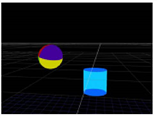

The TransformGeo node allows you to move, rotate, scale, and perform other transformations on several objects merged together with a MergeGeo node. It also lets you connect geometry objects to an Axis node. By doing so, you can move all the connected objects together by using the Axis transformation controls. All you need to do is insert a TransformGeo after each geometry object, connect the Axis node to the TransformGeo nodes’ axis input, and adjust the transform controls of the Axis node. For more information, see Parenting to Axis Objects.
Another use of the TransformGeo node is to have the rotation of one object depend on the position of another so that the first object is always rotated to face or “look at” the second one. For example, you can have a sphere object always facing a cylinder object, regardless of the cylinder’s position. When the cylinder is moved to a new position, the sphere is automatically rotated to face it.
|
|
|
| 1. | Select the 3D object node (for example, a sphere) that you want to face another object. |
| 2. | Select 3D > Modify > TransformGeo to insert a TransformGeo node. |
| 3. | Select the object you want the first object to face (for example, a cylinder), and insert a TransformGeo after this node, too. |
| 4. | Connect the first TransformGeo node into the look input of the second TransformGeo node. |
| 5. | Open the controls of the first TransformGeo node and go to the Look tab. |

| 6. | From the look axis dropdown menu, select the axis around which the object rotates to face the other object: |
|
|
|
| +Z | +Y |
|
 |
|
| +X | -Z |
|
|
|
| -Y | -X |
| 7. | Use the rotate X, rotate Y, and rotate Z check boxes to select the axes the object rotates around. For the first object to truly face the second, you need to check all three check boxes. |
| 8. | Adjust the look strength slider to define the extend of the rotation. The smaller the value, the less the object is rotated. Setting the value to 0 produces no rotation. |
| 9. | If you want to use an alternate scheme to calculate the rotation, check use quaternions. This may be useful for smoothing out erratic rotations along the selected look axis. |
If you now adjust the second TransformGeo node’s transform controls, you’ll notice that the first object automatically rotates to face the second object. For more information on how to adjust the transform controls, see Using the Transform Handles and Transforming from the Node Properties Panel.
|
|